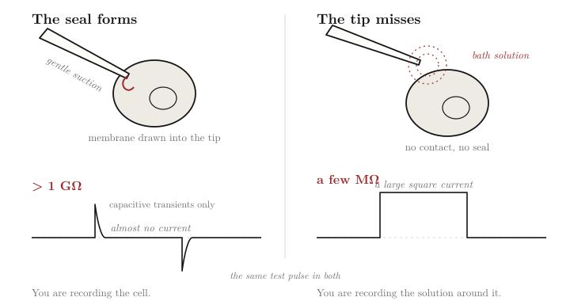

Windows and Brakes
Where the science of neuroplasticity stands
Rehan Krishnan · November 2026
Abstract. The young brain rewires itself with ease and the adult brain mostly does not. For decades that was put down to age. Work since then points to brakes: molecular and cellular mechanisms that close windows of plasticity and that, in animals, can be lifted. This essay goes from the first experiments on critical periods to current work on antidepressants, psychedelics and stroke recovery, and to what is still unknown.
The window
In the 1960s, David Hubel and Torsten Wiesel closed one eye of young kittens and recorded from visual cortex. Cells that should have answered to both eyes came to answer mostly to the open one. The same closure in an adult cat did very little. Mapping when the effect could be produced, they found it was confined to a few months early in life, a period of susceptibility1. The term that stuck is critical period: a stretch of development when experience shapes a circuit far more than it can later.
For a long time this was read as a story of decline: young brains are plastic, old brains have set. Over the last twenty-five years it has become clear that specific mechanisms open and close the window, and that some of them can be changed.
What opens it
The trigger turned out to be inhibition. In mice, speeding up the maturation of inhibitory circuits with extra BDNF brought the critical period forward2. In mice whose inhibition was too weak, the critical period never began, and a benzodiazepine, which strengthens inhibition, started it on demand3. The cells at the centre of this are parvalbumin-positive (PV) interneurons, fast-spiking cells that hold excitatory neurons in check4. The signal for PV cells to mature, the protein Otx2, is not made in visual cortex at all. It travels there and is taken up by PV cells after the eyes open5.
The window opens when an inhibitory circuit reaches a certain state, not simply at a certain age, and both experience and chemistry can shift that state.
What closes it
Closing the window is an active process as well. As the critical period ends, PV cells are wrapped in perineuronal nets, a lattice of extracellular matrix. Dissolving the nets with an enzyme, chondroitinase, restored ocular dominance plasticity in adult rats6. A second brake, the protein Lynx1, dampens cholinergic signalling in adult cortex; mice without it keep juvenile-like plasticity into adulthood7. Experience can release the brakes too: ten days of darkness reactivated rapid ocular dominance plasticity in adult rats8.
On this view the adult brain keeps the capacity to rewire but holds it back, and there are good reasons for that: a circuit that rewired at every input could not hold a memory or a skill.
Neuromodulators decide the direction of a change as well as whether it happens. In visual cortex, the same pattern of spike timing can strengthen or weaken a synapse, depending on which neuromodulatory receptors are active9. That result came from Alfredo Kirkwood’s lab at Johns Hopkins, where I now work.
The pharmacology of reopening
Antidepressants brought this closer to the clinic. Chronic fluoxetine restored ocular dominance plasticity in the visual cortex of adult rats, with lowered cortical inhibition and more BDNF10. Ketamine, a fast-acting antidepressant, rapidly increased synaptic proteins and dendritic spines in the rat prefrontal cortex through the mTOR pathway11, and in mice the new spines were needed to keep its behavioural effects going, though not to start them12. In 2021, a study reported that several antidepressants bind directly to TrkB, the receptor for BDNF13; a later study found that LSD and psilocin bind the same receptor with high affinity14.
Psychedelics had already been shown to grow neurites, spines and synapses in cultured neurons and in animals15, and a chemically modified, non-hallucinogenic analogue kept much of that structural effect in rodents16. A Johns Hopkins group later showed that psychedelics reopen a critical period for social reward learning in adult mice, and that how long it stayed open tracked how long each drug’s effects last in people: days for ketamine, weeks for psilocybin and LSD17.
Almost all of these results are in rodents, and reopening a window is not the same as using it well. In the fluoxetine experiment the drug made change possible, but closing one eye, an experience, decided what changed. If psychedelic-assisted therapy works in people, what happens during the session may matter as much as the drug.
New neurons, an unsettled question
A separate question is whether the adult human brain makes new neurons at all. In 2018, two studies of the human hippocampus reached opposite answers: one found that neurogenesis falls to undetectable levels by adulthood18, the other that it persists into old age19. A 2019 study, using tissue preserved under tightly controlled conditions, found many immature neurons in healthy adults and far fewer in people with Alzheimer’s disease20. In 2025, single-nucleus sequencing identified dividing neural progenitor cells in adult human hippocampus21, which adds weight to the view that some adult neurogenesis continues. How much, and whether it matters for memory or mood in people, is still open.
From mice to people
The clearest human test of a plasticity window so far is in stroke. After a stroke, animal studies suggested a period of heightened plasticity. The Critical Period After Stroke Study gave patients the same extra motor therapy at different times. Therapy started in the subacute window, about two to three months after the stroke, produced the clearest gains; the same therapy given months later did little22. It was a phase II trial and needs to be repeated, but it tested timing directly, in people.
Musical training is another human case: it changes the brain’s structure and function, which has made it a model for studying plasticity in people23.
My thoughts
I came to critical periods sideways, through music. I was reading about Larry Benowitz’s work at Harvard and then about Takao Hensch’s work on the critical period, and the question that caught me was whether the window could be reopened, or stretched, to help recovery after damage. Cross-modal plasticity is the version of this that I still find hardest to put down: take away one sense and the others don’t just compensate, they sharpen. If that rewiring is available after an injury, the question is whether a window can be opened on purpose to get at it. Following that question is also what got me interested in the developing brain, and eventually into the work I did at the University of Minnesota.

Fig. 1. The seal test. The same small voltage pulse is applied in both cases. Drawn for this essay.
Right now I am training in patch clamping and in the dissection that comes before it. The patching is the hard part. Forming the gigaseal is where it goes wrong: if you miss the cell, you are not recording the cell at all, you are recording the solution around it, and the trace tells you so. The dissection matters more than I expected, because a bad slice makes good patching impossible. Cells come out uneven or cut through, and the healthy ones are simply not there to find. The unhealthy ones have a look to them that is easy to recognise once someone shows you: we call them fried eggs.
The experiment I would want to run is at the network level rather than the single-cell level. Lesion or stimulate one part of a circuit and ask how the rest reorganises around it, recording from several cells at once across a visual input, watching which cells get recruited. What I would really want to know is whether a damaged optic pathway can be brought back that way.
What is not known
Lifting a brake opens a window everywhere the brake acts. Nobody yet knows how to reopen plasticity in one circuit and leave the rest alone.
The brakes are also there for a reason. A brain held open indefinitely is unlikely to be healthy, so the useful drugs may be the ones whose effects wear off.
And most of this was shown in rodents. The human evidence, from stroke rehabilitation, antidepressant trials and imaging of musicians, is real but indirect.
My own lab project looks at one of those circuits: how PV interneurons set the balance of excitation and inhibition in cortex as the critical period opens and closes.
-
D. H. Hubel, T. N. Wiesel. The period of susceptibility to the physiological effects of unilateral eye closure in kittens. J. Physiol. 206, 419–436 (1970). doi:10.1113/jphysiol.1970.sp009022 ↩
-
Z. J. Huang et al. BDNF regulates the maturation of inhibition and the critical period of plasticity in mouse visual cortex. Cell 98, 739–755 (1999). doi:10.1016/S0092-8674(00)81509-3 ↩
-
M. Fagiolini, T. K. Hensch. Inhibitory threshold for critical-period activation in primary visual cortex. Nature 404, 183–186 (2000). doi:10.1038/35004582 ↩
-
T. K. Hensch. Critical period plasticity in local cortical circuits. Nat. Rev. Neurosci. 6, 877–888 (2005). doi:10.1038/nrn1787 ↩
-
S. Sugiyama et al. Experience-dependent transfer of Otx2 homeoprotein into the visual cortex activates postnatal plasticity. Cell 134, 508–520 (2008). doi:10.1016/j.cell.2008.05.054 ↩
-
T. Pizzorusso et al. Reactivation of ocular dominance plasticity in the adult visual cortex. Science 298, 1248–1251 (2002). doi:10.1126/science.1072699 ↩
-
H. Morishita et al. Lynx1, a cholinergic brake, limits plasticity in adult visual cortex. Science 330, 1238–1240 (2010). doi:10.1126/science.1195320 ↩
-
H.-Y. He, W. Hodos, E. M. Quinlan. Visual deprivation reactivates rapid ocular dominance plasticity in adult visual cortex. J. Neurosci. 26, 2951–2955 (2006). doi:10.1523/JNEUROSCI.5554-05.2006 ↩
-
G. H. Seol et al. Neuromodulators control the polarity of spike-timing-dependent synaptic plasticity. Neuron 55, 919–929 (2007). doi:10.1016/j.neuron.2007.08.013 ↩
-
J. F. Maya Vetencourt et al. The antidepressant fluoxetine restores plasticity in the adult visual cortex. Science 320, 385–388 (2008). doi:10.1126/science.1150516 ↩
-
N. Li et al. mTOR-dependent synapse formation underlies the rapid antidepressant effects of NMDA antagonists. Science 329, 959–964 (2010). doi:10.1126/science.1190287 ↩
-
R. N. Moda-Sava et al. Sustained rescue of prefrontal circuit dysfunction by antidepressant-induced spine formation. Science 364, eaat8078 (2019). doi:10.1126/science.aat8078 ↩
-
P. C. Casarotto et al. Antidepressant drugs act by directly binding to TRKB neurotrophin receptors. Cell 184, 1299–1313 (2021). doi:10.1016/j.cell.2021.01.034 ↩
-
R. Moliner et al. Psychedelics promote plasticity by directly binding to BDNF receptor TrkB. Nat. Neurosci. 26, 1032–1041 (2023). doi:10.1038/s41593-023-01316-5 ↩
-
C. Ly et al. Psychedelics promote structural and functional neural plasticity. Cell Rep. 23, 3170–3182 (2018). doi:10.1016/j.celrep.2018.05.022 ↩
-
L. P. Cameron et al. A non-hallucinogenic psychedelic analogue with therapeutic potential. Nature 589, 474–479 (2021). doi:10.1038/s41586-020-3008-z ↩
-
R. Nardou et al. Psychedelics reopen the social reward learning critical period. Nature 618, 790–798 (2023). doi:10.1038/s41586-023-06204-3 ↩
-
S. F. Sorrells et al. Human hippocampal neurogenesis drops sharply in children to undetectable levels in adults. Nature 555, 377–381 (2018). doi:10.1038/nature25975 ↩
-
M. Boldrini et al. Human hippocampal neurogenesis persists throughout aging. Cell Stem Cell 22, 589–599 (2018). doi:10.1016/j.stem.2018.03.015 ↩
-
E. P. Moreno-Jiménez et al. Adult hippocampal neurogenesis is abundant in neurologically healthy subjects and drops sharply in patients with Alzheimer’s disease. Nat. Med. 25, 554–560 (2019). doi:10.1038/s41591-019-0375-9 ↩
-
I. Dumitru et al. Identification of proliferating neural progenitors in the adult human hippocampus. Science 389, 58–63 (2025). doi:10.1126/science.adu9575 ↩
-
A. W. Dromerick et al. Critical Period After Stroke Study (CPASS): a phase II clinical trial testing an optimal time for motor recovery after stroke in humans. Proc. Natl. Acad. Sci. USA 118, e2026676118 (2021). doi:10.1073/pnas.2026676118 ↩
-
S. C. Herholz, R. J. Zatorre. Musical training as a framework for brain plasticity: behavior, function, and structure. Neuron 76, 486–502 (2012). doi:10.1016/j.neuron.2012.10.011 ↩
Questions, corrections or disagreements are welcome: rkrish23@jh.edu.